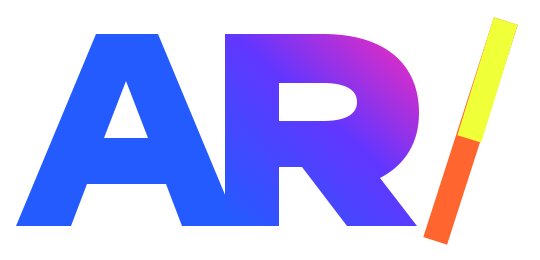

DISEÑAR.
REUTILIZAR.
MEJORAR.
Los recursos visuales necesitan reglas. Esta biblioteca conecta tokens, ejemplos funcionales, estados, accesibilidad y archivos de identidad.
Una marca.
Todas sus formas.
26 variantes vectoriales construidas desde un solo monograma AR/ con la R distinguible y el slash independiente. Descarga SVG, exporta PNG o copia el código para reutilizarlas.
La versión transparente no contiene un fondo. El slash independiente es un recurso de composición; no sustituye la marca AR/.
Color y contraste.
Colores primitivos y semánticos. Haz clic para copiar. La herramienta calcula contrastes reales entre texto y superficies.
Calculadora de contraste
Calculando contraste...
Una familia.
DOS PESOS.
Una sola voz tipográfica con dos intensidades: Archivo Regular para claridad y Archivo Black para titulares de gran escala. Sin cursivas decorativas, sin serif y sin efectos innecesarios.
DIRECTO.
Regla: tamaño primero, peso después. Regular 400 para contraste y Black 900 para impacto; Bold 700 para encabezados funcionales. Evitar cursivas, inclinaciones y exceso de tracking negativo. Revisar escritorio y móvil antes de publicar.
Espacios y superficies.
Los valores se construyen desde el JSON real. Cada muestra muestra el nombre del token y su valor; no hay escala paralela escrita a mano.
Escala espacial / 4 px
Elevación controlada
--ar-shadow-soft--ar-shadow-raisedRadio y forma
Componentes y estados.
Ejemplos reales de uso: acciones, estados, entrada de datos y foco de teclado. Cada ejemplo utiliza variables del sistema.
Botones
Selector de estado
Estado de carga
Campos y validación
Prueba un correo válido o inválido.
Prueba también la navegación por teclado: Tab, Shift + Tab y Enter.
Movimiento responsable.
Feedback 120 ms, hover 220 ms, transición 420 ms, gesto editorial 740 ms. Se respeta prefers-reduced-motion.

Gesto slash
La animación trabaja sobre transform y opacity, con mejora progresiva GSAP. No requiere WebGL para comprender el contenido.
Three.js se utiliza de forma opcional en la portada editorial, solo en dispositivos compatibles y sin ahorro de datos.
Archivos maestros.
Base para nuevos proyectos. Cambia tokens.json, ejecuta npm run brand:tokens y valida con npm run check.